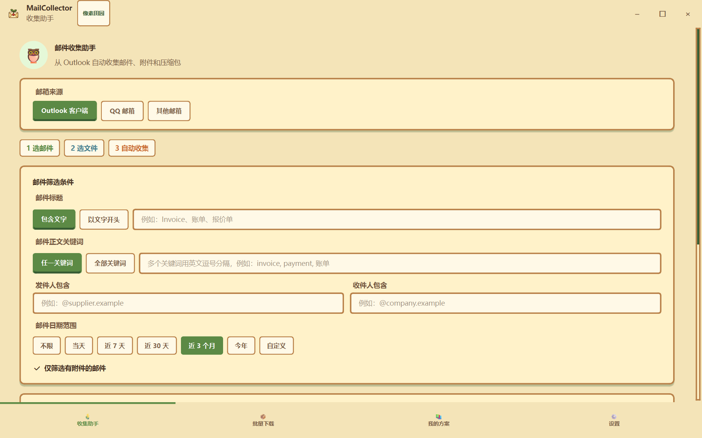
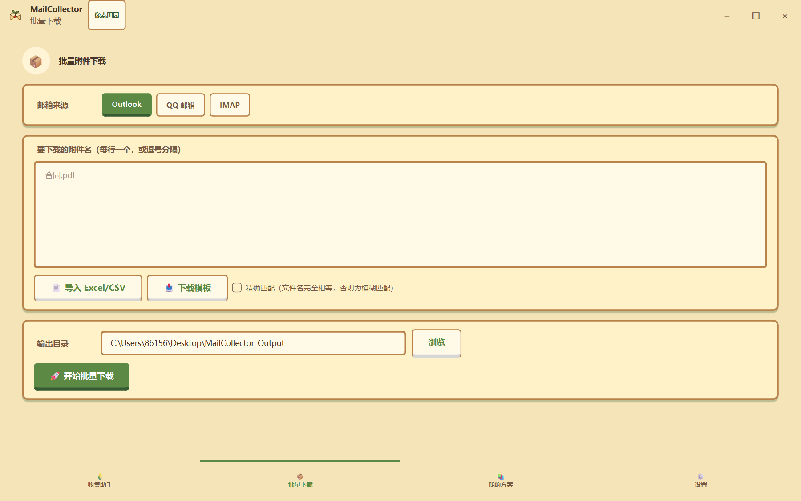
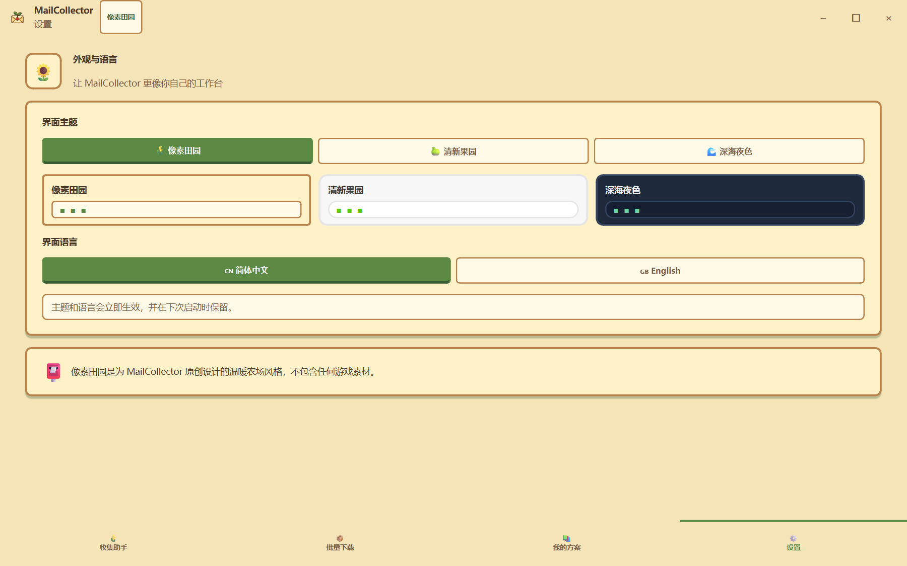

CASE 002 · DESKTOP AUTOMATION
MailCollector
邮件自动收集工具
将查找邮件、筛选附件、批量下载和解压缩整理成可复用的桌面工作流，面向真实办公场景减少重复操作。

2 数据源Outlook COM / IMAP
多条件日期、主题、发件人、附件
批处理下载、解压与归档
多语言主题和界面语言切换
REAL WORKFLOW
筛选、下载、复用
程序以线程化任务处理批量邮件，提供可视进度、方案保存和敏感信息不落盘的配置方式。


DEMO FILM